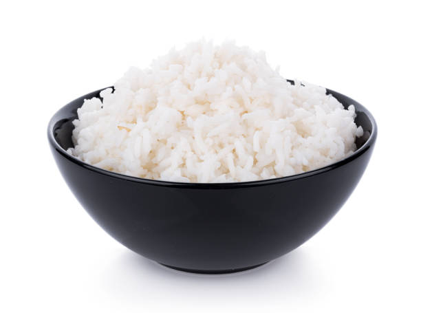

Rice

Description
Rice is a staple ingredient all over the world. Many different cultures consume rice as a staple in their diet and over 95% of the world's rice crop is consumed by humans. This recipe is for plain white rice.
Ingredients
- 2 Cups Water
- 1/2 Teaspoon Salt
- 1 Tablespoon Oil
- 1 Cup White Rice
Steps
- Bring water to a boil. Add salt and oil.
- When water has returned to a boil, stir in rice.
- Stir, cover pot, and turn heat low.
- Keep rice simmering and pot covered for about 17-25 minutes.
- Once cooked, let rice sit for a few minutes.
- Fluff and serve.